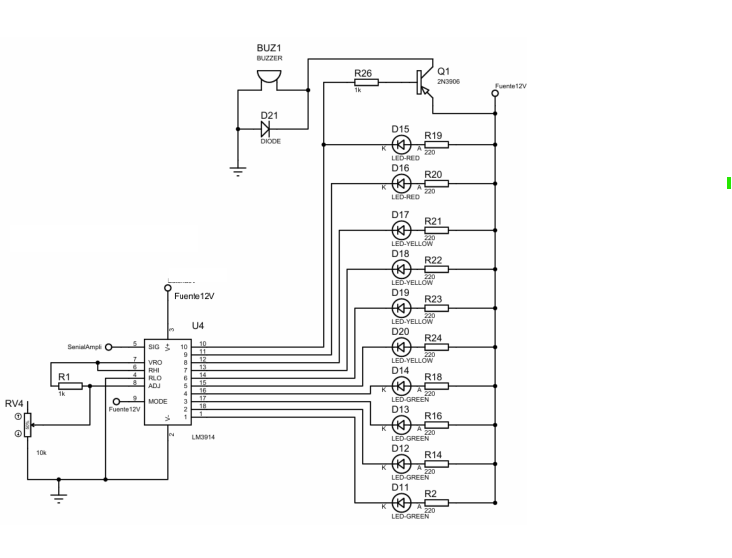
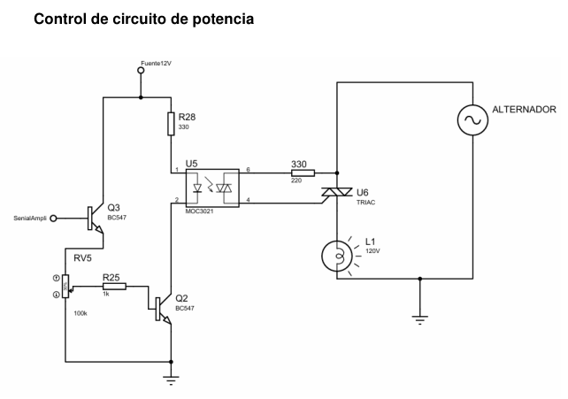
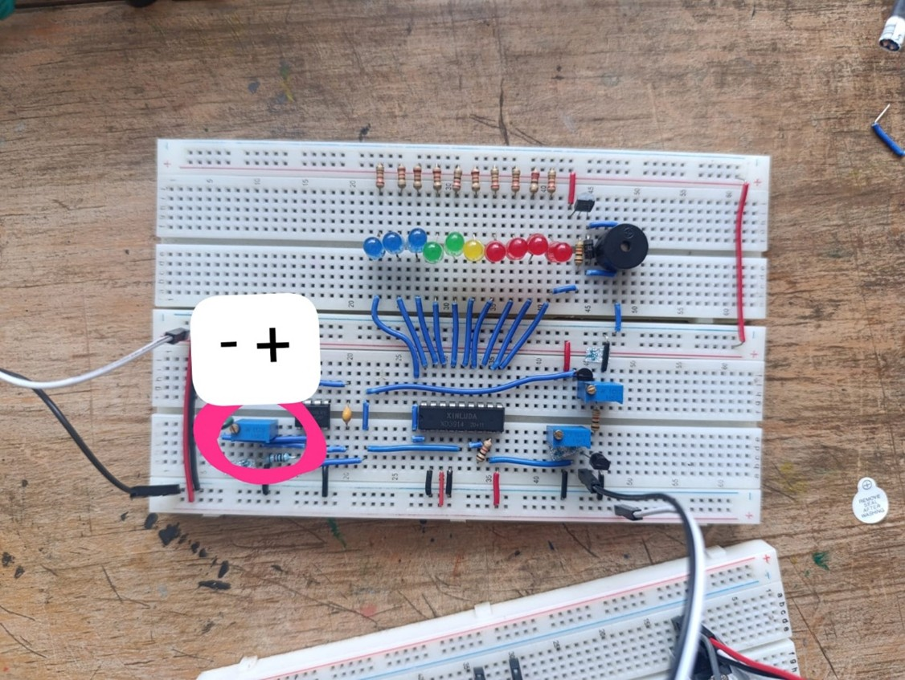
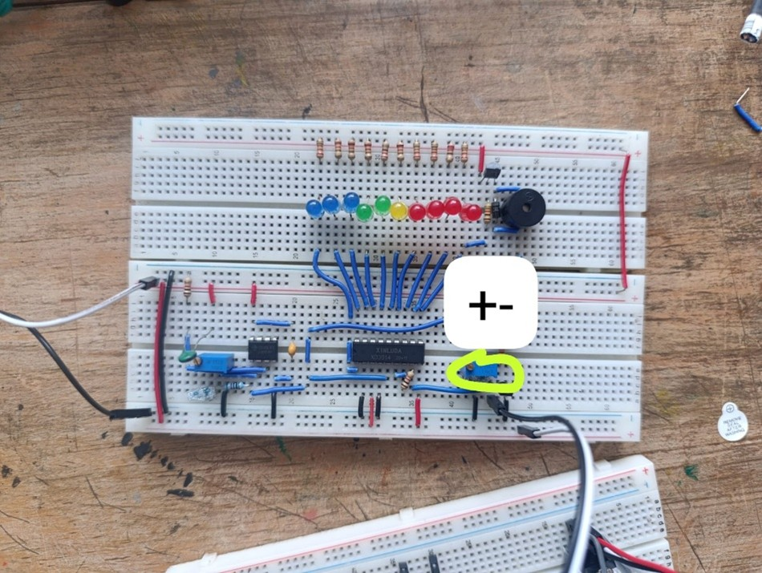
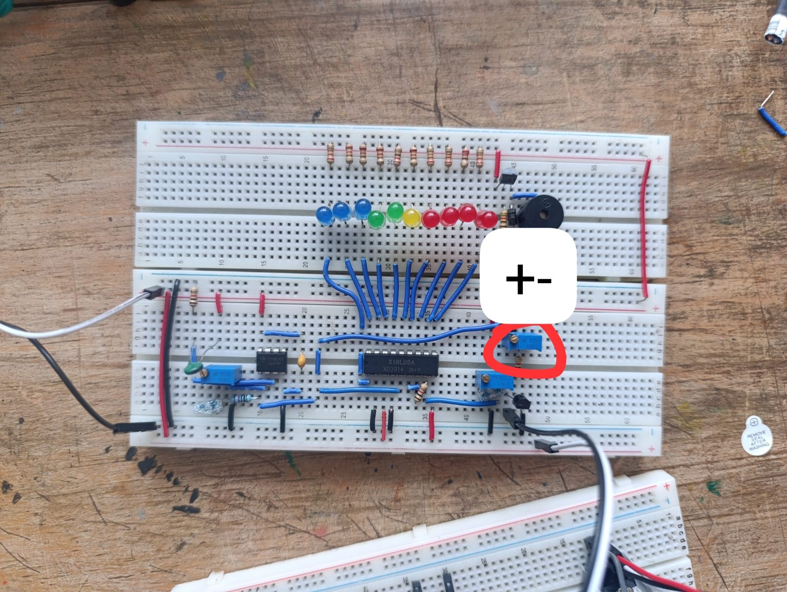

Un circuito que mide, visualiza y regula la temperatura de forma proporcional y continua —sin microcontroladores ni software— usando un termistor NTC, amplificación con LM358, una barra de 10 LEDs con el LM3914 y control de potencia de 120 V CA mediante optoacoplador MOC3021 y TRIAC BT136.
Universidad Mariano Gálvez · Electrónica Analógica · Quinto Ciclo sección "B" · Catedrático: Ing. Jorge Salguero · Entrega 08/05/2026.
Muchos sistemas de calefacción solo encienden y apagan, lo que genera variaciones bruscas, consumo excesivo y desgaste prematuro. Las soluciones digitales encarecen y complican el diseño. Aquí se resuelve con electrónica analógica: barata, sin programación y de respuesta proporcional.
El termistor NTC forma un divisor con una resistencia. Al subir la temperatura, su resistencia baja y el voltaje en la entrada (+) del LM358 sube. La señal se amplifica de forma lineal hasta un rango útil de 0 V a 8 V.
El voltaje amplificado entra al LM3914, que actúa como voltímetro de 10 niveles encendiendo los LEDs en modo barra. Al llegar al último nivel, el buzzer suena como alarma de sobretemperatura.
Un seguidor de emisor toma la señal y, al superar el umbral, dispara el MOC3021. Éste activa la compuerta del TRIAC BT136, dejando pasar la corriente alterna hacia la lámpara que simula el calefactor.
El optoacoplador MOC3021 es la única interfaz entre la etapa de control (12 V) y la de potencia (120 V CA). No existe continuidad eléctrica directa entre ambas: seguridad ante todo.
El sistema se divide en tres etapas que operan simultáneamente. Cada una tiene su propio diagrama esquemático y su potenciómetro de calibración independiente.
El termistor RT2 (NTC 10 kΩ a 25 °C) en serie con R15 (1 kΩ) forma el divisor alimentado a 12 V. El LM358 amplifica la señal en configuración no inversora para cubrir un rango de 0 V a 8 V. Los capacitores C1 y C2 filtran el ruido.

La señal entra al pin SIG del LM3914, que enciende los 10 LEDs (verdes → amarillos → rojos) en modo barra conforme sube el voltaje. El buzzer BUZ1 se conecta al pin 10 y suena únicamente al alcanzar el último nivel de la escala.

Q3 (seguidor de emisor) toma la señal y RV5 ajusta el umbral. Cuando Q2 conduce, enciende el LED interno del MOC3021, que dispara el TRIAC BT136 y deja pasar la corriente alterna hacia la lámpara L1, sin chispas ni encendidos accidentales.
Las tres tomas reales del montaje señalan cada potenciómetro de calibración. Estos tres ajustes independientes son el corazón de la flexibilidad del diseño analógico.

Regula la salida del LM358, es decir, qué tanto se amplifica la señal del sensor antes de llegar al LM3914.

Ajusta el voltaje máximo al que se activa el último LED y la bocina (buzzer): define dónde "termina" la barra.

Ajusta la sensibilidad: en qué momento se activa el foquito que simula nuestro circuito de potencia (la lámpara).
Video del circuito operando en tiempo real y una galería del proceso de armado y pruebas.
R15 = 1 kΩ mantiene el voltaje bajo y evita la saturación prematura mientras el NTC baja de resistencia con el calor.
Con R17 (10 kΩ) y el potenciómetro RV2 (10 kΩ) se expande la señal hacia el LM3914 hasta el rango 0–8 V.
RV4 funciona como divisor de tensión para emparejar la escala visual con la salida del LM358.
La señal pasa por Q3 y el atenuador RV5; al superar 0.7 V se activa Q2, encendiendo el optoacoplador y el TRIAC.
Precios en Quetzales (Q). El uso de circuitos integrados y transistores estándar mantiene el costo muy por debajo de una solución con microcontrolador.
| Cant. | Descripción | P. unitario | Total |
|---|---|---|---|
| 2 | Transistor BC547 | Q 1.50 | Q 3.00 |
| 1 | Transistor 2N3906 | Q 1.00 | Q 1.00 |
| 1 | Termistor NTC 10K Ω | Q 4.50 | Q 4.50 |
| 1 | Resistencia 10K Ω | Q 1.00 | Q 1.00 |
| 1 | Resistencia 100K Ω | Q 1.00 | Q 1.00 |
| 2 | Resistencia 1K Ω | Q 1.00 | Q 2.00 |
| 3 | Resistencia 4.7K Ω | Q 1.00 | Q 3.00 |
| 2 | Capacitor 0.1 µF | Q 1.00 | Q 2.00 |
| 1 | Capacitor 10 µF | Q 2.00 | Q 2.00 |
| 1 | Amplificador operacional LM358 | Q 5.00 | Q 5.00 |
| 2 | Potenciómetro 10K Ω | Q 5.00 | Q 10.00 |
| 1 | Potenciómetro 1K Ω | Q 5.00 | Q 5.00 |
| 1 | Potenciómetro 100K OHM | Q 5.00 | Q 5.00 |
| 10 | LED | Q 1.00 | Q 10.00 |
| 1 | Buzzer electrónico | Q 15.00 | Q 15.00 |
| 10 | Resistencia 220 Ω | Q 1.00 | Q 10.00 |
| 3 | Resistencia 330 Ω | Q 1.00 | Q 3.00 |
| 1 | Driver de LED LM3914 | Q 14.00 | Q 14.00 |
| 1 | Triac BT136-600 | Q 8.00 | Q 8.00 |
| 1 | Optoacoplador MOC3021 | Q 5.00 | Q 5.00 |
| 1 | Dioso 1N4004 | Q 1.00 | Q 1.00 |
| TOTAL | Q 103.50 |
Se identificaron seis amenazas técnicas. Cada una se evaluó por su riesgo inherente (probabilidad × impacto, sin control) y su riesgo residual tras aplicar los controles. Usa el botón para ver cómo los controles mueven cada riesgo dentro de la matriz.
| ID | Amenaza | Inh. | Res. | Acción |
|---|---|---|---|---|
| A | Fallo de aislamiento eléctrico — cruzar los 12 V con los 120 V CA. Control: separación física estricta de pistas; el MOC3021 como única interfaz de cruce. | 15 | 5 | Controlar |
| B | Desbordamiento del rango del LM358 — no alcanzar 8 V o saturarse antes. Control: capacitores de desacoplo y filtro, calibración fina de RV2 y medición en el pin 1. | 8 | 4 | Controlar |
| C | Activación prematura del buzzer — suena antes del nivel 10. Control: negativo del buzzer estricto al pin 10 y SW2 en modo barra. | 9 | 2 | Eliminar |
| D | Falta de linealidad / histéresis en la lámpara — chispas o parpadeo en el TRIAC. Control: resistencia de 1 kΩ en la base de Q2 y red de disparo adecuada. | 16 | 4 | Controlar |
| E | Sobrecalentamiento del TRIAC BT136 — manejo continuo de 120 V CA. Control: incorporación obligatoria de un disipador térmico de aluminio. | 12 | 4 | Controlar |
| F | Inversión de polaridad en LEDs o Q3 — error de montaje. Control: prueba de diodos con multímetro y mapeo E-B-C del BC547 antes de energizar. | 8 | 2 | Eliminar |